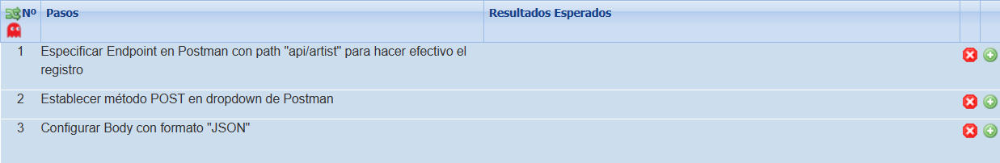
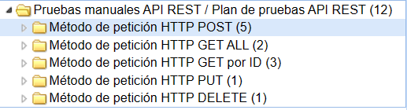
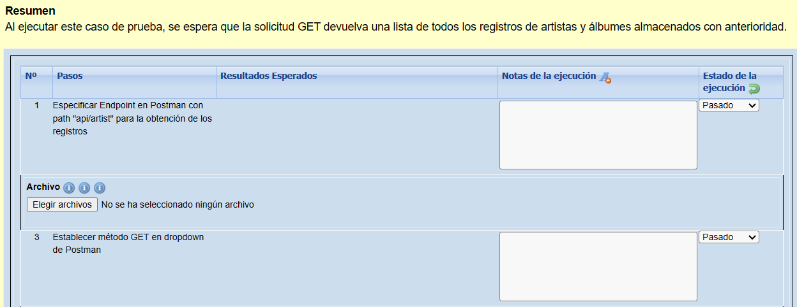
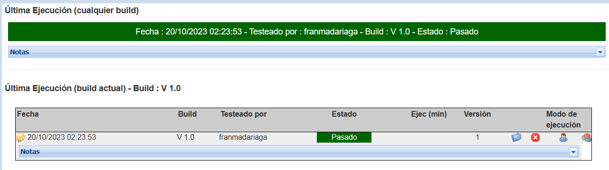

Plan de pruebas Microservicios

Para el registo de pruebas, se utilizará el software de gestión de pruebas "Test Link", el cuál entrega una interfaz completa para la elaboración, ejecución y obtención de métricas para el proceso de pruebas.
TestLink permite crear los casos de prueba con funciones como la redacción de pasos, resultados esperados, prioridad, duración, keywords, etc.
Una vez creados los casos, estos ser irán almacenando en suites de prueba que contendrán factores en común.
Luego de agregar y asignar los casos de prueba al Tester, se puede proceder a ejecutarlos, especificando los resultados obtenidos por cada paso y si fue pasado, fallido o bloqueante.
Finalmente los casos quedan ejecutados y se pueden obtener métricas o informes de lo obtenido.

A continuación puedes descargar el plan de pruebas propuesto para el proyecto de Microservicios